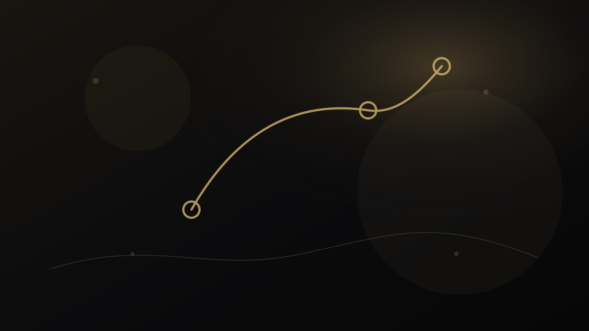
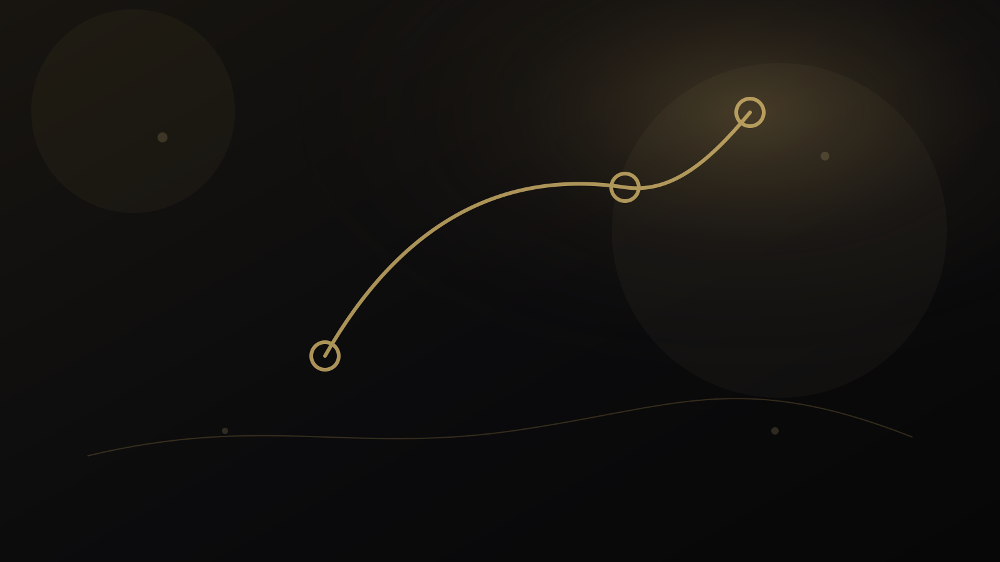
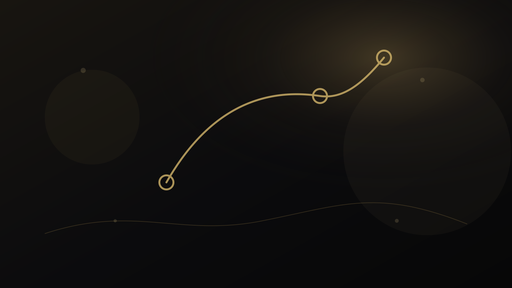
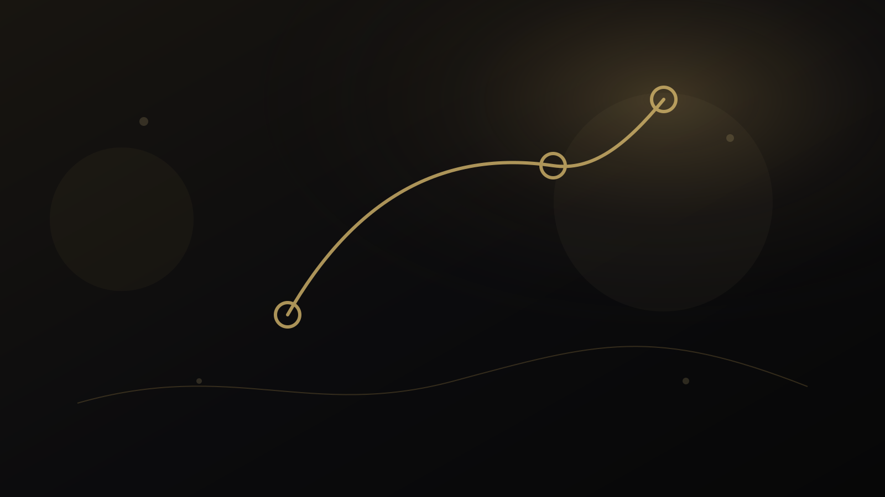
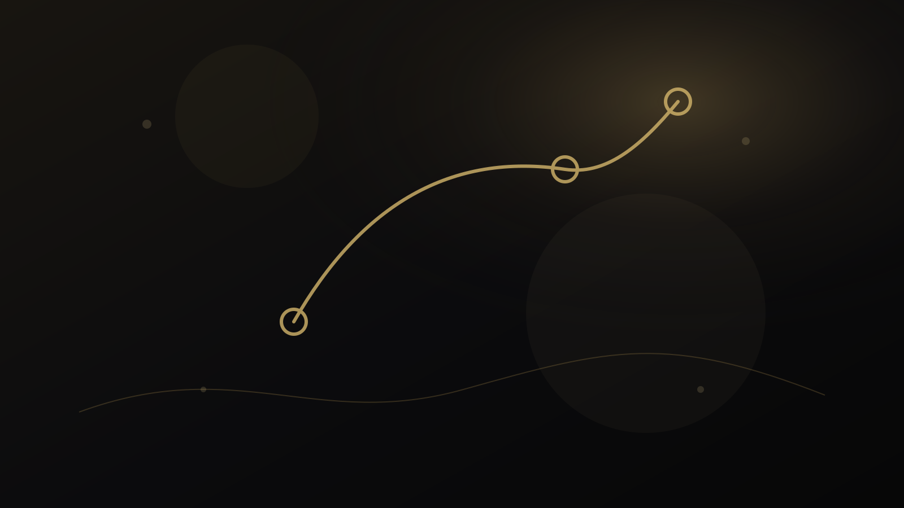
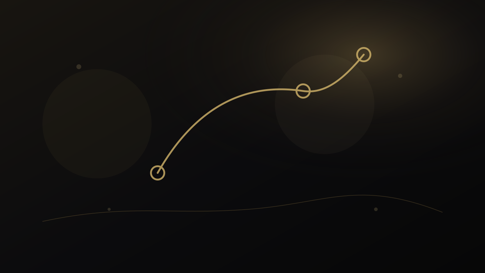
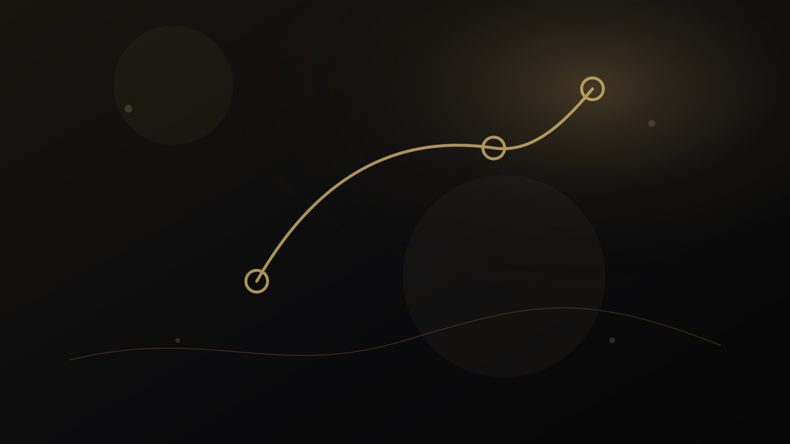
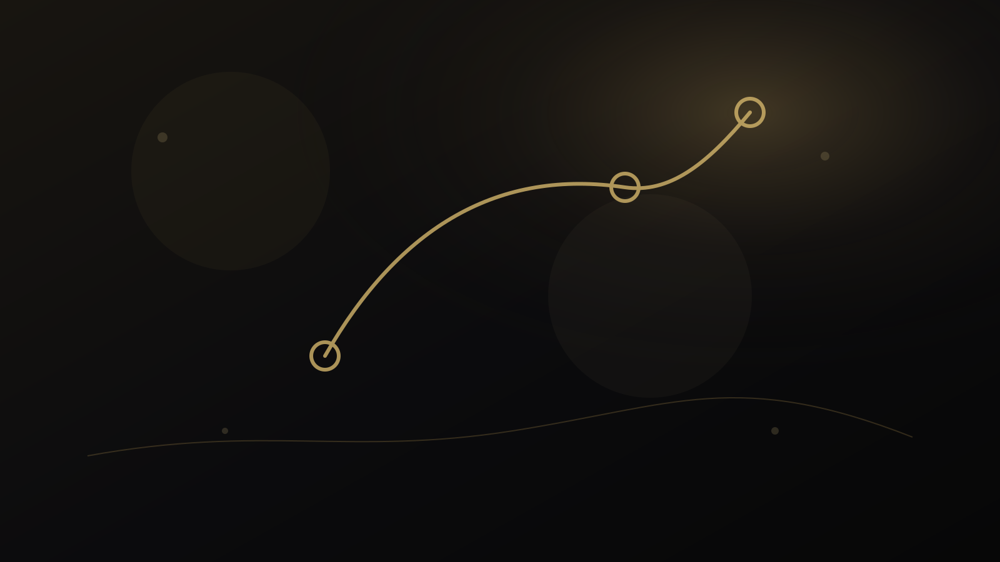
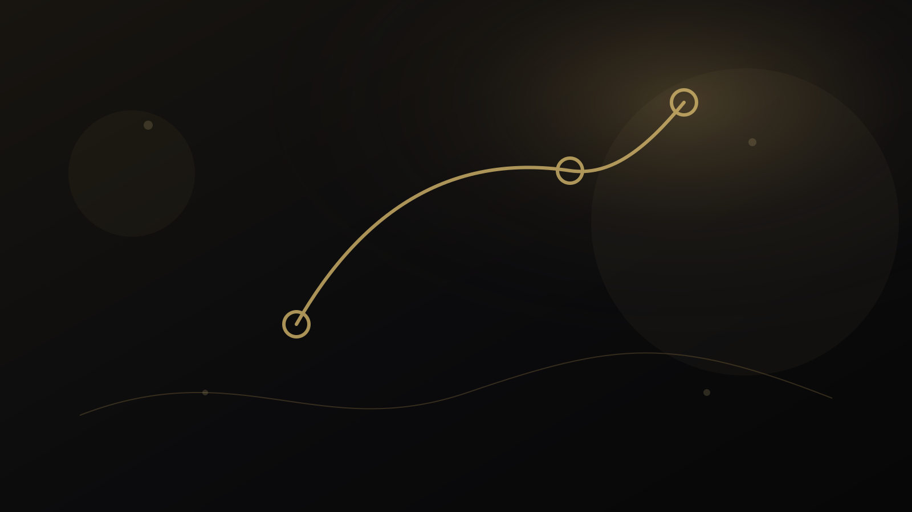
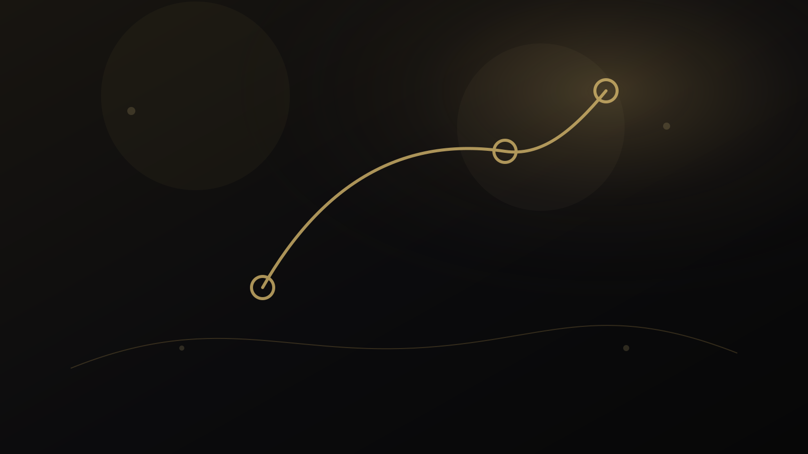

خوشه دانشی
دانشآموز و خانواده
راهنماهای تصمیم تحصیلی، کنکور، کارنامه، گفتوگوی خانوادگی و حمایت از استقلال دانشآموز.

راهنمای دانشآموز و خانواده
چگونه مشاور تحصیلی مناسب را انتخاب کنیم؟ ۱۰ معیار برای خانوادهها و دانشآموزان
۱۰ معیار عملی برای انتخاب مشاور تحصیلی مناسب؛ از روش تصمیمگیری و شفافیت دامنه تا حریم خصوصی، شواهد، پیگیری و پرهیز از تضمینهای غیرواقعی.

راهنمای دانشآموز و خانواده
مشاوره تحصیلی تخصصی چیست و چه زمانی واقعاً به آن نیاز داریم؟
مشاوره تحصیلی تخصصی چه تفاوتی با توصیه عمومی دارد، چه زمانی لازم است و در یک جلسه حرفهای چه شواهد و تصمیمهایی باید بررسی شوند.

راهنمای دانشآموز و خانواده
جلسه مشترک والد و دانشآموز؛ چگونه درباره آینده تحصیلی بدون تنش تصمیم بگیریم؟
راهنمای جلسه مشترک والد و دانشآموز برای تصمیم تحصیلی؛ چگونه نگرانی خانواده، صدای دانشآموز، شواهد و محدودیتها در یک گفتوگوی سازنده کنار هم قرار گیرند.

راهنمای دانشآموز و خانواده
مشاوره کنکور حرفهای چه کمکی میکند؟ از برنامهریزی تا تصمیمهای دوره آزمون
مشاوره کنکور حرفهای چگونه برنامهریزی، تحلیل آزمون، تنظیم منابع، مدیریت تصمیمها و بازبینی مسیر را به وضعیت واقعی داوطلب متصل میکند.

راهنمای دانشآموز و خانواده
برنامه یکماهه کنکور چگونه باید طراحی شود؟ برنامهریزی، پایش و اصلاح مسیر
چارچوب طراحی برنامه یکماهه کنکور بر اساس وضعیت فعلی، هدفهای هفتگی، مرور، آزمون، تحلیل خطا و بازتنظیم برنامه بدون نسخه یکسان.

راهنمای دانشآموز و خانواده
تحلیل کارنامه و تصمیم تحصیلی؛ نمرهها درباره نقاط قوت و مسیر آینده چه میگویند؟
تحلیل کارنامه تحصیلی برای تصمیمگیری؛ چگونه الگوی عملکرد، روند، درسها، خطاها و زمینه را تفسیر کنیم بدون اینکه یک نمره را به برچسب استعداد تبدیل کنیم.

راهنمای دانشآموز و خانواده
انتخاب رشته دانشگاهی ۱۴۰۵؛ چگونه رشتهمحلها را علمی و منطقی اولویتبندی کنیم؟
راهنمای تحلیلی انتخاب رشته دانشگاهی ۱۴۰۵؛ تفکیک امکان قبولی از تناسب فردی، بررسی رشتهمحلها و اولویتبندی بر اساس منابع رسمی و شواهد واقعی.

راهنمای دانشآموز و خانواده
انتخاب رشته جامع؛ وقتی بین چند مسیر و اولویت رقیب مردد هستیم چه کنیم؟
راهنمای انتخاب رشته جامع برای پروندههای پیچیده؛ چگونه رتبه، علاقه، توانایی، شهر، هزینه، خانواده و آینده را بدون تقلیل تصمیم به یک امتیاز نهایی کنار هم بگذاریم.

راهنمای دانشآموز و خانواده
والدین در انتخاب رشته فرزندشان چقدر باید دخالت کنند؟
نقش والدین در انتخاب رشته چیست؛ چگونه تجربه، نگرانی مالی و شناخت خانوادگی را وارد تصمیم کنیم بدون اینکه استقلال دانشآموز از بین برود.

راهنمای دانشآموز و خانواده
اگر بین چند رشته مردد باشم چه کار کنم؟ از سردرگمی تا مقایسه قابل دفاع
وقتی بین چند رشته مردد هستیم چگونه ابهام را به سؤالهای قابل بررسی تبدیل کنیم، شواهد تازه جمع کنیم و تصمیم را بدون عجله پیش ببریم.

راهنمای دانشآموز و خانواده
چگونه علاقه تحصیلی واقعی را از علاقه موقت تشخیص دهیم؟
راههای تشخیص علاقه تحصیلی پایدار از علاقه موقت؛ بررسی تجربه واقعی، تکرار، هزینه تلاش، شناخت رشته و شواهد رفتاری پیش از انتخاب مسیر.

راهنمای دانشآموز و خانواده
کارنامه خوب اما بیانگیزگی؛ چرا نمره بالا همیشه نشانه مسیر درست نیست؟
دانشآموزی با نمرات بالا اما انگیزه پایین به چه بررسیهایی نیاز دارد؛ تفاوت عملکرد، علاقه، فشار، معنا و ظرفیت رشد در تصمیم تحصیلی.

راهنمای دانشآموز و خانواده
بعد از اعلام نتایج کنکور چه کنیم؟ نقشه تصمیمگیری مرحلهبهمرحله
بعد از اعلام نتایج کنکور چه کنیم؛ از خواندن کارنامه و منابع رسمی تا ساخت فهرست گزینهها، تحلیل شرایط، گفتوگوی خانواده و ثبت انتخابهای قابل دفاع.

راهنمای دانشآموز و خانواده
تصمیم تحصیلی در خانواده؛ چگونه بدون تنش و فشار به جمعبندی برسیم؟
چارچوب گفتوگوی خانوادگی برای تصمیم تحصیلی؛ تفکیک نگرانی، ارزش، شواهد و محدودیت تا والد و دانشآموز به تصمیم قابل توضیح برسند.

راهنمای دانشآموز و خانواده
چه زمانی دانشآموز واقعاً به مشاور نیاز دارد و چه زمانی یک راهنمای خوب کافی است؟
تفاوت میان نیاز به محتوای عمومی و مشاوره فردی؛ چه نشانههایی میگویند تصمیم دانشآموز به تحلیل پرونده، جلسه یا پیگیری حرفهای نیاز دارد.